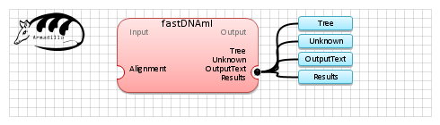

| Name | fastDNAml | |
| View |  | |
| Publication(s) | fastDNAmL: a tool for construction of phylogenetic trees of DNA sequences using maximum likelihood.
Olsen GJ, Matsuda H, Hagstrom R, Overbeek R.
Comput Appl Biosci. 1994 Feb;10(1):41-8. | |
| Website | http://iubio.bio.indiana.edu/soft/molbio/evolve/fastdnaml/fastDNAml.html | |
| Description | Infer phylogenetic tree from DNA sequences using Maximum Likelyhood (ML)
Copyrights: Gary Olsen. University of Illinois, Urbana | |
| Input (1) |
Alignment | |
| Output (4) |
Unknown Tree Results OutputText | |
| Keywords (1) | Tree, Inference, Maximum likelihood | |
| Related (3) | DNAML (Phylip) PhyML PROTML (Phylip) | |
| Sample workflow | fastDNAml.properties.db |